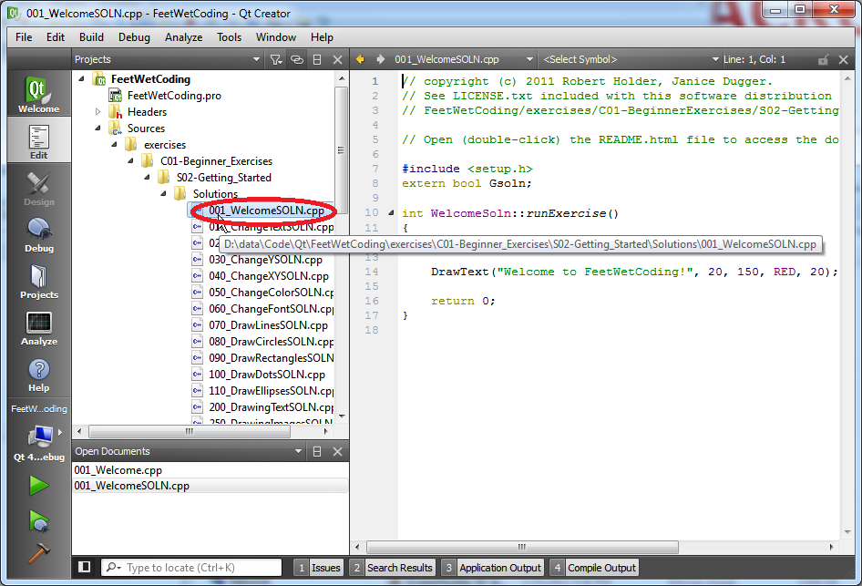

Chapter 01, Section 02, Exercise 001_Welcome.cpp
Chapter 01, Section 02, Exercise 001_Welcome.cpp
Welcome to your first C++ program!
You NEED to read the help page How to Use FeetWetCoding to understand how to use the FeetWetCoding exercises! And if you haven't already installed Qt Creator, you NEED to read the Install QtCreator help page and follow the instructions there or you will not be able to use FeetWetCoding at all. If you have not read those pages and completed the instructions there, please do so now. Don't worry: I'll wait here. :-)
In this exercise, you will learn:
● What it looks like when Qt Creator builds and runs a program in the FeetWetCoding learning framework.
● What a "comment" is and what it is used for.
Why you need to know this:
● There are comments in almost all C++ programs. You need to be able to recognize them, understand their purpose, and learn how to use them properly yourself.
To do this exercise you need to know:
● How to load the fwc project in Qt Creator, and run it.
What is a "comment"?
In the code for this exercise, which lives in the file 001_Welcome.cpp, the following is a comment:
// USAGE: fwcDrawText("Text.", x, y, color, fontsize);
Don't worry right now what this particular comment means. We will get to that in the next exercise.
Programmers can add comments to the source code by prefacing them with the characters //
Comments exist primarily to help explain the actual code that your program is made of. Comments do not get executed and are ignored by the compiler. In other words:
Code explains to the computer what you want the computer to do.
Comments explain to you (or another programmer) what you intended the code to mean.
Comments are a sort of private communication between programmers that the general public does not see. Often, comments are notes from one programmer to another. However, you can also use comments as a way to make a note of something to yourself that is not immediately obvious just by looking at the code, so that later, when time has passed and you have forgotten how some code that you wrote works, you will have a little note right there helping you remember.
You can also temporarily "comment out" a line of actual code by adding the // characters to the beginning of that line, for testing purposes. You might do this to see what happens when you want the program to run without running that line (which you just temporarily "commented out"), to see what difference it makes at runtime. This way, you have not deleted the line from your .cpp source file. By commenting out a line of code, you can prevent it from running without deleting it and then having to re-type it again later if you decide you want to put it back in. So comments are not just handy for making notes in your code, you can also use the comment characters // as a way to test your code and experiment with leaving certain lines out of what your program does when it runs. We will talk about this in a later exercise, so don't worry if this doesn't make sense right now!
When you are done working on the exercise, or if you get stuck and can't figure it out, check the solution code, which lives one directory below your exercise code in the "Solutions" directory, and is named:
● 010_WelcomeSOLN.cpp

Always understand the SOLN code before you proceed to the next exercise!
When you are ready, you can proceed to 010_ChangeText.cpp.
documentation generated by HelpNDoc 3/26/2012 11:00 AM
FeetWetCoding version 0.2.2 released 2012Mar24 copyright (c) 2011,2012 Robert Holder, Janice Dugger.
...click the ZIP button on our Github page for the latest source!
Created with the Personal Edition of HelpNDoc: Free CHM Help documentation generator